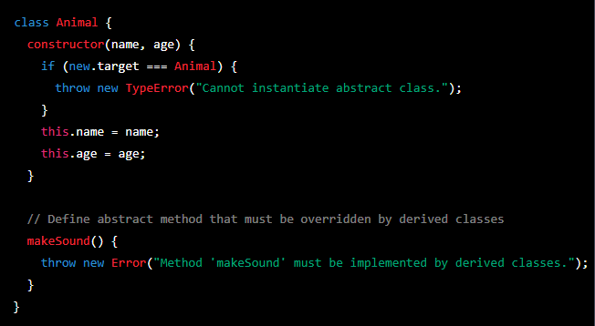
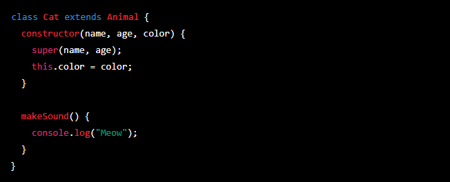
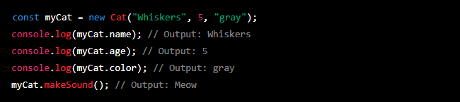
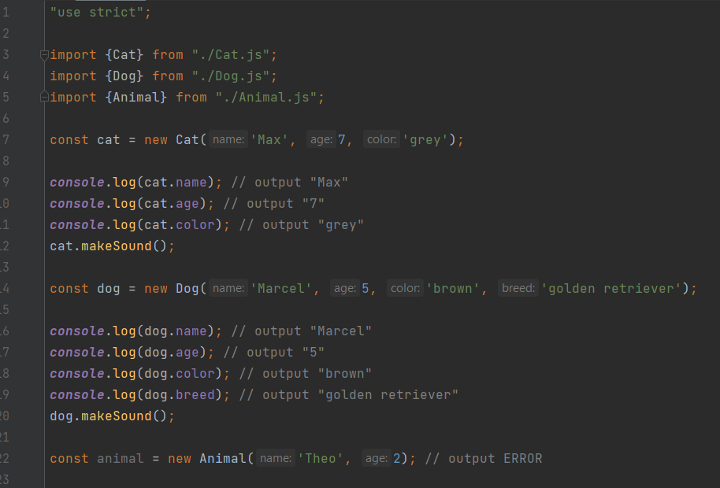
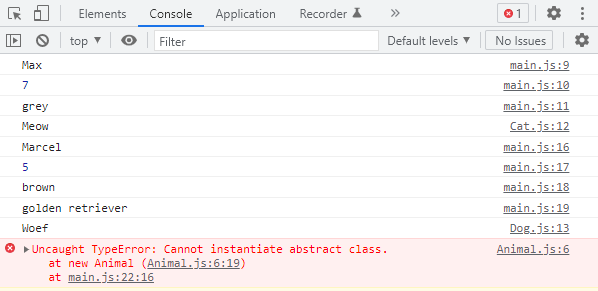

In JavaScript, there is no built-in support for abstract classes, but you can simulate them using some techniques. One approach is to use a combination of the class keyword, the new.target meta-property, and the throw statement to create a class that cannot be instantiated directly, but only by its derived classes.
Here's an example of how you can make the Animal class abstract:
In this example, the Animal class has a constructor method that throws an error if it is called directly using the new operator. The new.target meta-property is used to determine whether the constructor was called by the derived class or not. If the constructor was called by Animal directly, it throws an error.
The Animal class also defines an abstract method called makeSound that must be implemented by any derived class. If the method is called on an instance of Animal, it will throw an error.
You can then create a derived class from Animal and implement the makeSound method:
In this example, the Cat class extends Animal and overrides the makeSound method to make a "Meow" sound.
Now you can create an instance of the Cat class:
You cannot create an instance of the Animal class directly, because it is abstract:
Inspect the code in this example (main.js, Animal.js, Cat.js and Dog.js). In the main.js file instances of Cat, Dog and Animal are initiated.
Here is the output in the console log for the code above:
